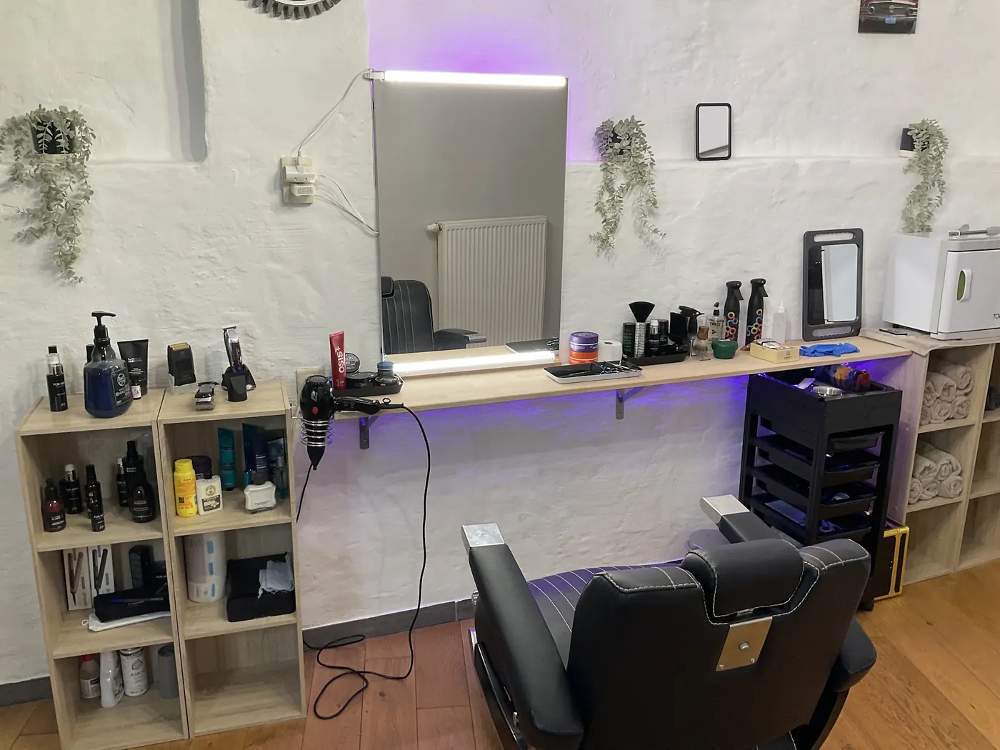
01Sur rendez-vous
Vous choisissez la prestation, le jour et l'heure. Votre place est prête quand vous arrivez.
Prendre rendez-vousBarbier · Saint-Servais, Namur
Barber shop
Coupe homme, taille, entretien et soin de la barbe, serviettes chaudes. Avec ou sans rendez-vous, du mercredi au samedi de 9 h à 19 h. Ou chez vous, dans un rayon de 10 km.
Comme ça vous arrange
Trois façons de passer entre les mains de Barb'Eric, écrites noir sur blanc sur la vitrine du salon.

01Vous choisissez la prestation, le jour et l'heure. Votre place est prête quand vous arrivez.
Prendre rendez-vous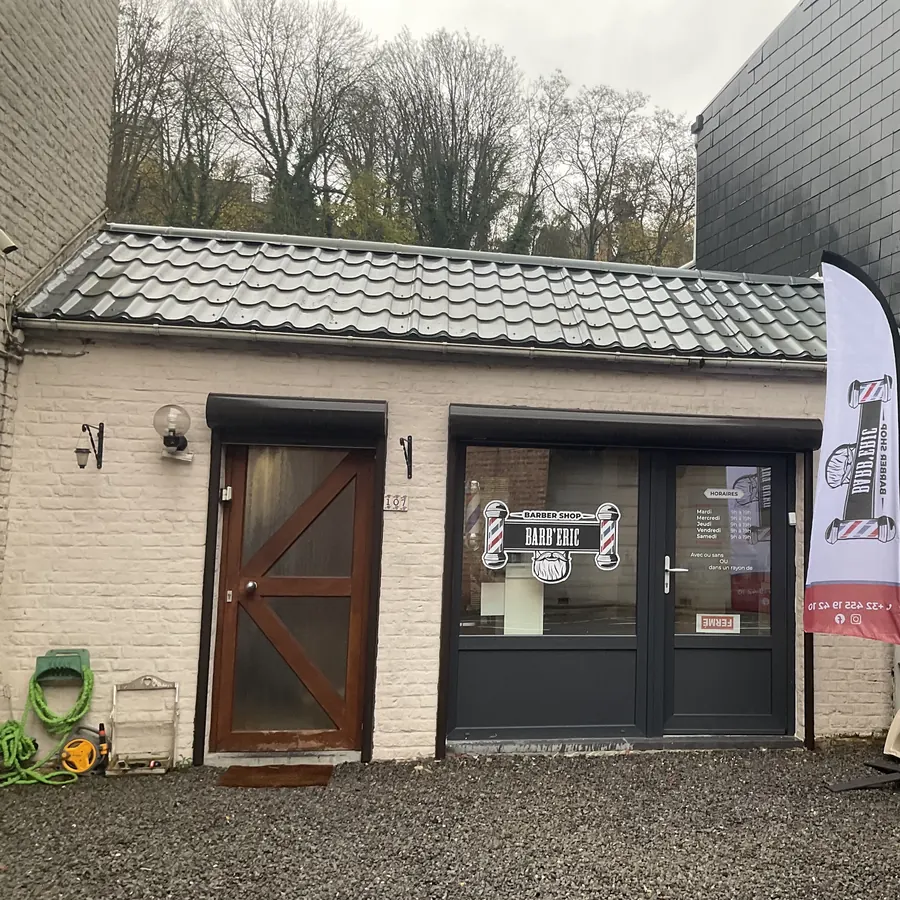
02Vous passez quand ça vous chante, du mercredi au samedi, entre 9 h et 19 h. Deux places de parking vous attendent.
Horaires et accès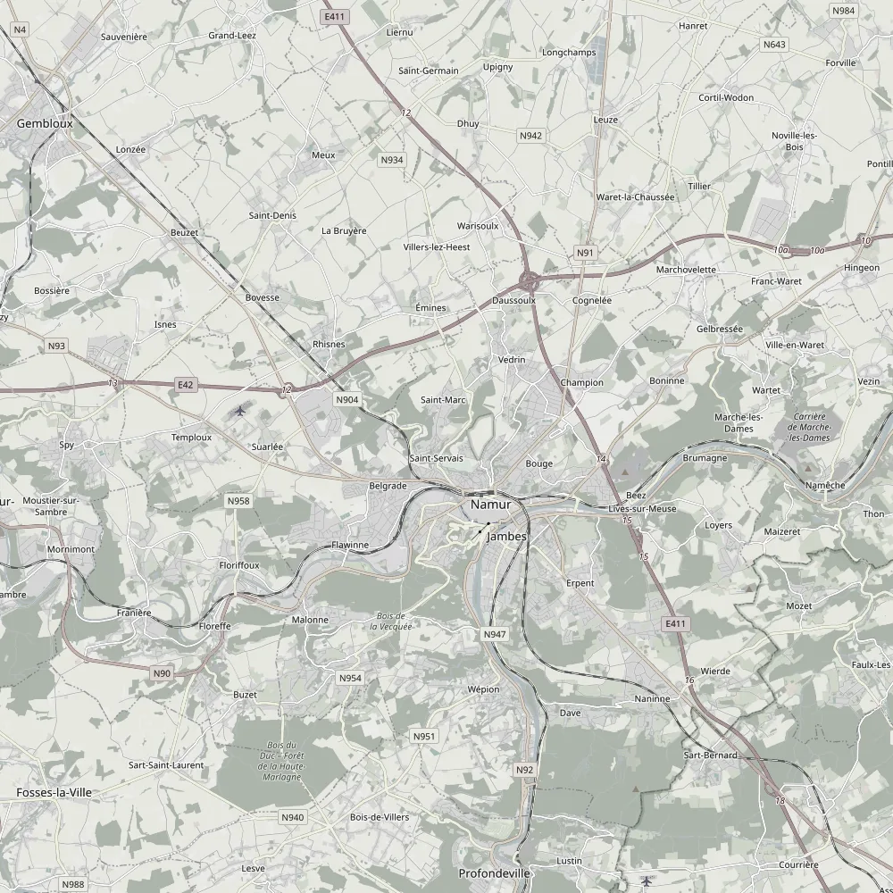
03Barb'Eric se déplace chez vous, dans un rayon de 10 km autour du salon de Saint-Servais.
Voir la zoneLe salon
Le salon occupe une petite annexe en briques blanches, à côté de la maison du n° 107 de la chaussée de Perwez. Dedans : murs blanchis à la chaux, parquet de chêne, engrenages et horloge au mur, ampoules à filament et un fauteuil de barbier face au miroir éclairé.
Au programme : coupe homme, taille, entretien et soin de la barbe. Le chauffe-serviettes est à côté du poste, les produits pour cheveux et barbe sur les étagères.
« Bonne ambiance, attention au détails, minutieux, aimable, travail de qualité. Á répéter. »Carlan M., avis Google, 5 étoiles
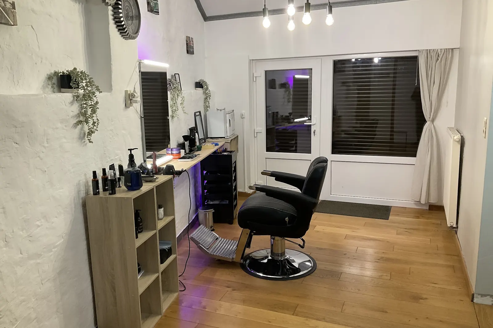
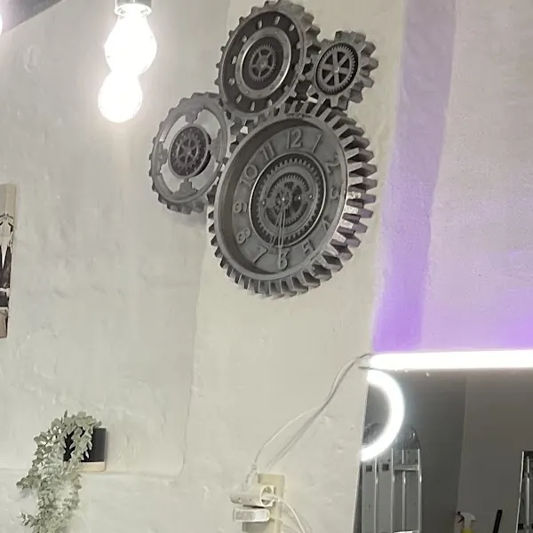
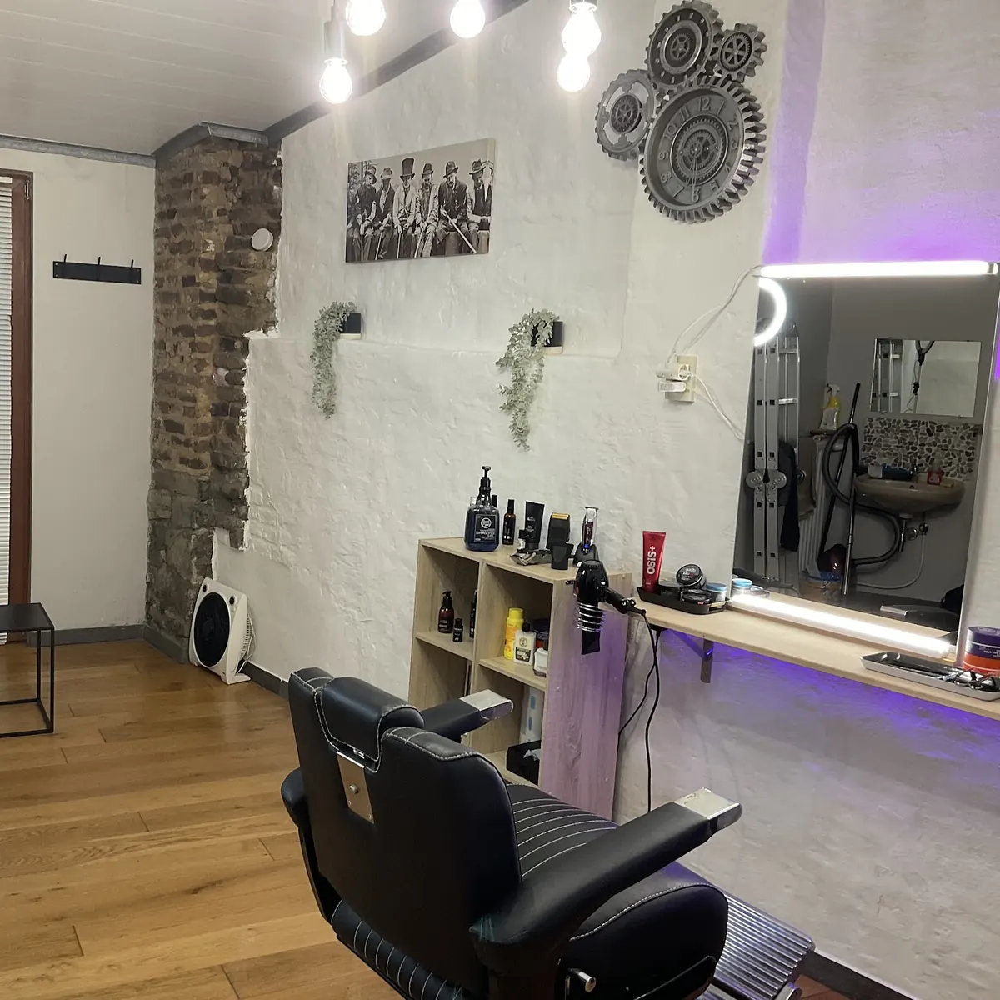
Prestations
Les mots sont de Julien W., client du salon. Cheveux, barbe, serviettes chaudes : voici ce qu'on vient chercher chez Barb'Eric.
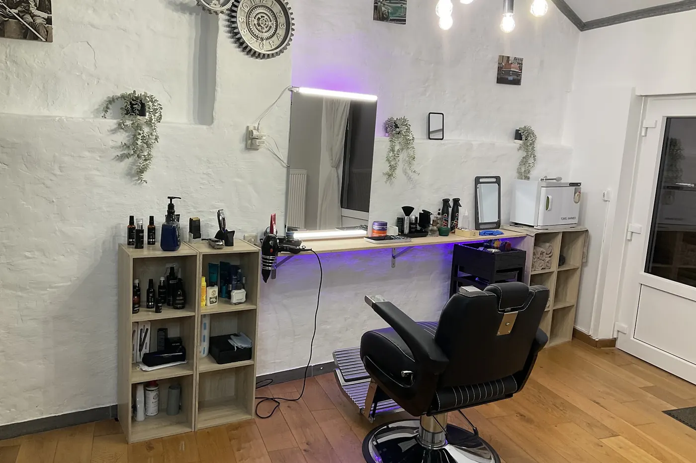
Au fauteuil, face au miroir éclairé. Au salon ou chez vous.
« Coiffeur au top! »Julien W.
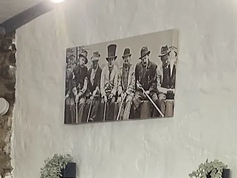
La barbe a sa prestation à elle : taille, entretien et soin.
« attention au détails, minutieux »Carlan M.
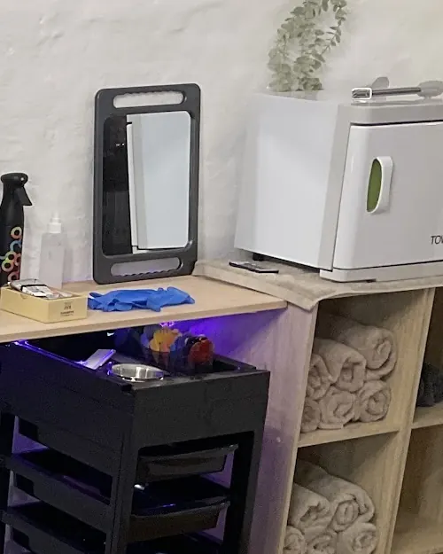
Elles sortent du chauffe-serviettes, juste à côté du poste.
« Serviettes chaudes 🫡🫡 »Anthony R.
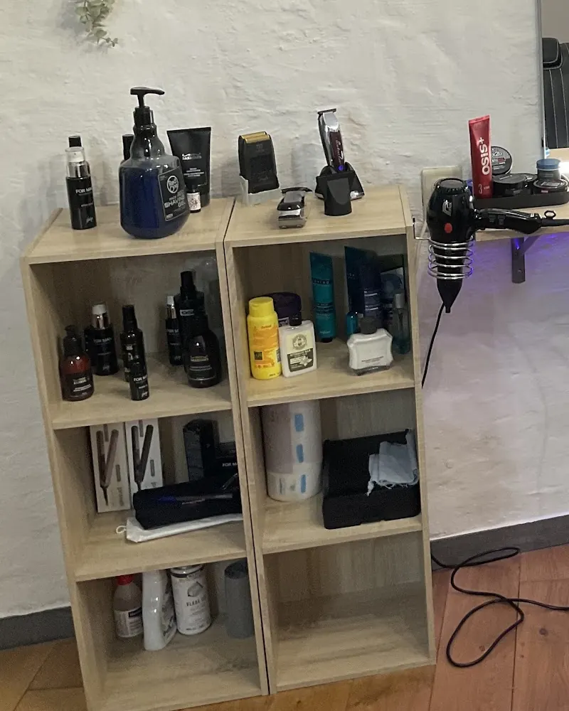
Les produits pour cheveux et barbe sont à portée de main, sur les étagères du salon.
« produits de qualité pour les cheveux et la barbe »Anthony R.
Faites glisser pour voir les prestations
Donnés au téléphone ou au salon. Un client résume : « prix correct ».
0455 19 42 10Prendre rendez-vous
La prestation, le jour, l'heure : la demande est faite en trente secondes, même quand le salon est fermé.
Avis Google
Une moyenne de 5,0 sur 10 avis : chaque client a mis la note maximale. Voici ce qu'ils écrivent après leur passage.
À domicile
Pas le temps de passer au salon, ou plus à l'aise à la maison ? Barb'Eric se déplace dans un rayon de 10 km autour de Saint-Servais. Ça couvre Namur et ses alentours, par exemple :
Cercle de 10 km à vol d'oiseau autour du salon. Un doute sur votre adresse ? Un coup de fil suffit.
Horaires et accès
Du mercredi au samedi, de 9 h à 19 h
| lundi | fermé |
|---|---|
| mardi | fermé |
| mercredi | 9 h – 19 h |
| jeudi | 9 h – 19 h |
| vendredi | 9 h – 19 h |
| samedi | 9 h – 19 h |
| dimanche | fermé |
Avec ou sans rendez-vous. Les passages à domicile se fixent par téléphone.
Chaussée de Perwez 107
5002 Saint-Servais (Namur)
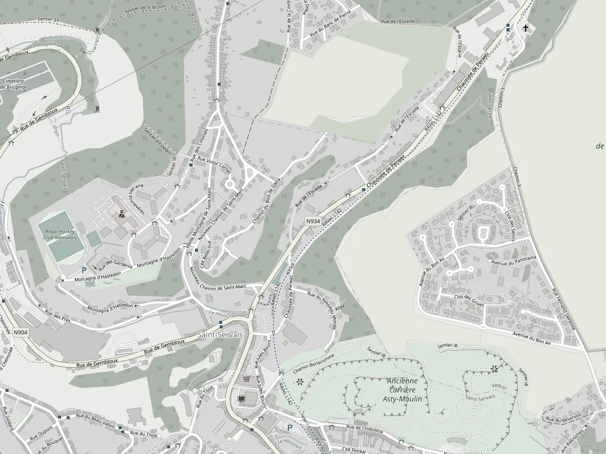
Itinéraire © OpenStreetMap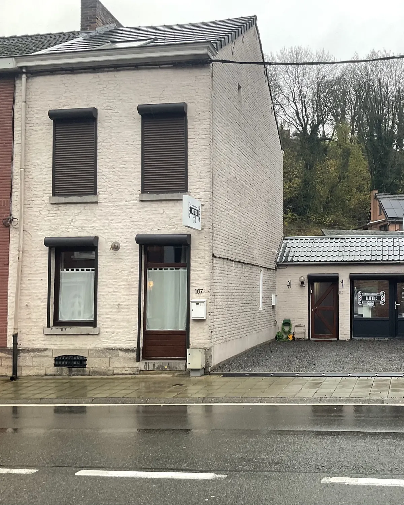
Repérez la maison en briques blanches du n° 107 : le salon est l'annexe juste à droite, avec le drapeau Barb'Eric devant la porte.
Deux places de parking pour venir au salon en voiture.
Photos et nouvelles du salon sur la page Barb'Eric | Namur.